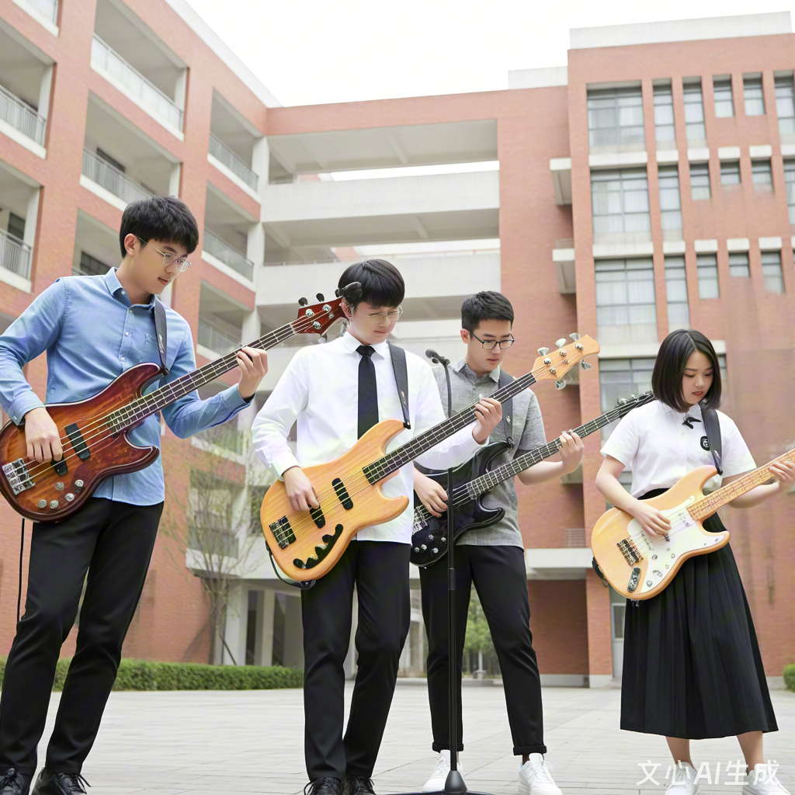

在充满青春活力与多元文化的校园里，有这样一方属于节奏与律动的小天地 —— 我们是“低音社”，一个专注于贝斯音乐、致力于为热爱低音乐器与现代音乐文化的同学们提供交流、学习与演出平台的学生社团。
我们成立于几年前，虽然相较于校内一些历史悠久的社团而言尚属年轻，但凭借对贝斯音乐的共同热爱，我们迅速凝聚起一批又一批志同道合的伙伴。从最初只有寥寥数人的小团体，到如今拥有稳定活跃成员群体的音乐社群，我们一路以音符为桥梁，用低沉而富有张力的贝斯声线，为校园音乐文化注入了别样的节奏与能量。
“低音社”是一个以贝斯为核心，但不限于此的音乐兴趣社团。贝斯作为乐队中承上启下的灵魂乐器，既能为旋律搭建稳固的低频基础，也能通过slap、walking bass、即兴solo等方式展现其独特的音乐表现力。我们关注贝斯本身，也关注它所连接的更广阔的音乐世界：从 Funk、Jazz、Fusion 到 Rock、Pop、Funk Metal，乃至电子音乐、实验音乐，只要有节奏、有律动、有想法，都是我们探索的方向。
我们相信，音乐不只是技巧的堆砌，更是情感的表达与思想的碰撞。在这里，你不必担心自己是否“够专业”或“起点高”，只要你愿意倾听、愿意尝试、愿意交流，这里就有属于你的一席之地。
社团日常活动丰富多样，主要包括以下几个方面：
乐器交流与教学：定期组织贝斯演奏分享会，无论是电贝斯还是Double Bass，无论是新手入门还是进阶技巧，都可以在交流中相互学习。我们也邀请校内外有经验的乐手进行小型 Workshop，内容涵盖基础乐理、指法练习、调音维护、效果器使用等实用知识。
合奏与乐队组建：我们鼓励成员之间的合作，定期组织 jam session，让大家在实际演奏中磨合默契、激发灵感。同时，社团内部也支持成员自由组队，参与校内各类演出、比赛，甚至走出校园，与其他高校音乐社团联动交流。
音乐创作与编曲尝试：对于有创作意愿的同学，社团提供开放的平台，支持从零开始尝试作曲、编曲，尤其是围绕贝斯展开的音乐构思。我们相信，低音不仅是伴奏，它也可以是引领节奏与情绪的核心。
演出与校园音乐活动：每学期我们会策划并参与多场演出，包括迎新晚会、校园音乐节、社团开放日、街头 busking 等。通过舞台，我们不仅展示自己的成长，也让更多同学听见贝斯、感受节奏的魅力。
无论你是贝斯手、吉他手、鼓手，还是主唱、键盘手，甚至只是单纯喜欢听音乐、想了解贝斯文化的同学，我们都热烈欢迎你的加入。“低音社”不仅仅是一个乐器爱好者的集合，更是一个包容多元、鼓励表达、注重合作的音乐社区。
我们希望，通过这个平台，让每一个对音乐有兴趣的同学都能找到属于自己的节奏，释放内心的律动，结识志同道合的朋友，并在集体的创作与演出中，感受音乐带来的共鸣与快乐。
如果你也曾在某个瞬间被一段贝斯line打动，如果你也想在校园里找到一个可以弹琴、交流、玩音乐的家，那么，“低音社”期待你的加入！
在这里，节奏不止，音乐不息。让我们一起，在低音之中，听见彼此，也听见自己。
返回顶部| 025年春季学期贝斯社活动安排表 | |||
|---|---|---|---|
| 活动名称 | 活动时间 | 活动地点 | 负责人 |
| 新成员见面会 | 3月15日 14:00-16:00 | 校园艺术楼307排练室 | 林野（大三贝斯手，社团现任副社长） |
| 贝斯基础教学公开课 | 每周三 18:30-20:00 | 周明远（大二音乐学专业，校民乐团贝斯手） | |
| 常规Jam Session | 每周五 19:00-21:30 | 生活区B栋负一层 | 陈默（大四吉他手，社团活动策划组组长） |
| “春日音浪”校园联合演出 | 5月31日 18:00-20:30 | 中心广场露天舞台 | 苏悦（大三主唱，社团外联部部长） |
在校园的一角，总有一群人，抱着贝斯，沉浸于节奏的世界。他们是校园贝斯社的成员，也是校园音乐生活中不可或缺的一部分。无论是在排练室里专注调弦的身影，还是在舞台上随律动摇摆的模样，都展现着这个社团独特的气质与活力。
走进排练室，你能听到低沉而富有张力的贝斯声在空间中回荡，时而沉稳如大地，时而跳跃如心跳。社员们围坐在一起，有人专注演奏，有人认真聆听，偶尔停下交流想法，讨论如何让一段旋律更有层次，让一次合奏更加默契。每一次的 jam session，都是一次思维与灵感的碰撞，也是一次音乐语言的共同创造。
而在校园的各大舞台上，贝斯社的成员们更是大放异彩。他们或与乐队一同登台，用扎实的节奏托起整首歌曲的情绪；或以独奏、合奏的形式，展现贝斯这一乐器的多样魅力。不论是在迎新晚会的聚光灯下，还是在校园音乐节的草地上，他们的演出总能吸引一大批观众驻足聆听，甚至跟着节奏轻轻摇摆。
除了舞台与排练室，日常的交流与分享同样精彩。新老成员之间没有隔阂，有的是对音乐共同的热爱与相互扶持的成长。无论你是初学者，还是已经有一定基础的乐手，在这里都能找到属于自己的位置，收获友谊与进步。
这就是我们的风采——用贝斯讲述青春，用节奏连接彼此，在音乐中找到自己，也在集体中发光发热。
林野第一次摸到贝斯是在社团招新摊位前。那时的他还只是个连拨片都拿不稳的大一新生，却被低音震动胸腔的触感激得心跳加速。三年过去，他从跟着学长练和弦的“小透明”，变成了能统筹活动、调解成员矛盾的副社长。最让他骄傲的不是拿了多少演出奖项，而是去年新成员见面会上，那个曾紧张到忘谱的学妹，如今已能在校园音乐节上独当一面。他说，贝斯教会他的不只是技巧，更是把热爱变成责任的过程。
周明远的书包里总装着两样东西：一本翻旧的贝斯教程，和几颗备用拨片。作为社团基础课老师，他把每节公开课都当成第一次备课——从按弦角度到slap节奏分解，连琴颈上的品丝标记都要反复调整。上周有个零基础的学弟总按不准大横按，急得直挠头。周明远没急着示范，反而递给他一杯温水：“当年我也卡在这里三天。”后来两人蹲在琴房角落，一个慢动作拆解，一个咬着牙重复，直到夕阳把影子拉得老长。现在那学弟已能完整弹完《Come As You Are》，逢人就说：“是周老师的耐心，让我听见了自己的节奏。”
返回顶部请认真填写以下信息，确保联系方式准确无误。 提交后，社团会通过电话或短信的方式通知面谈或试音时间。
提交表单后，如需修改信息，可以再次填写并提交最新的一份。
返回顶部校园贝斯社 · 2025 招新网页